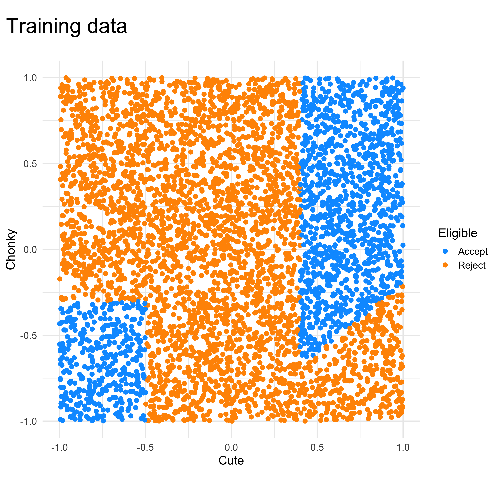
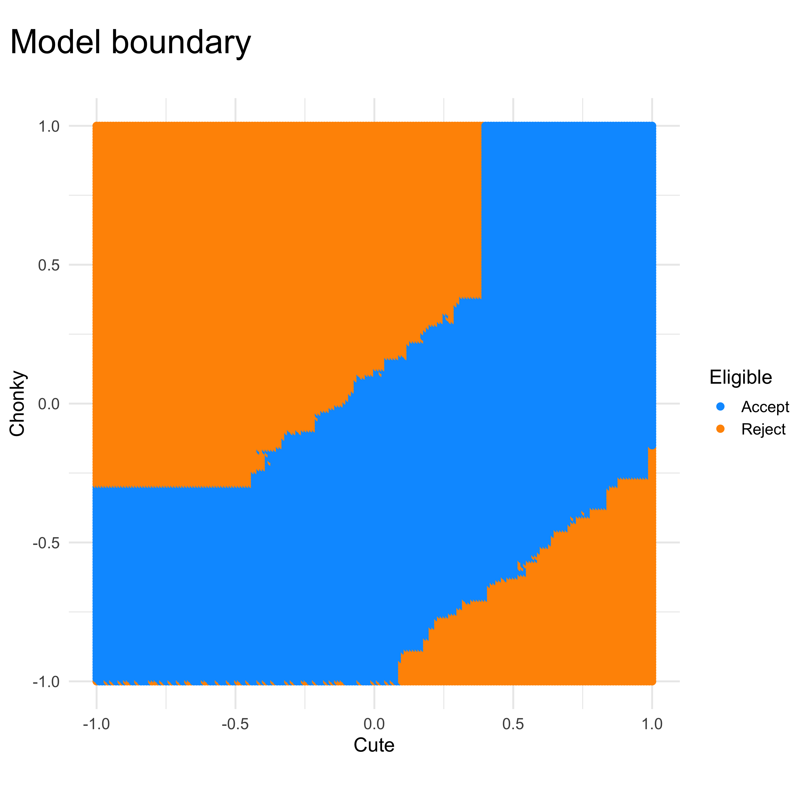
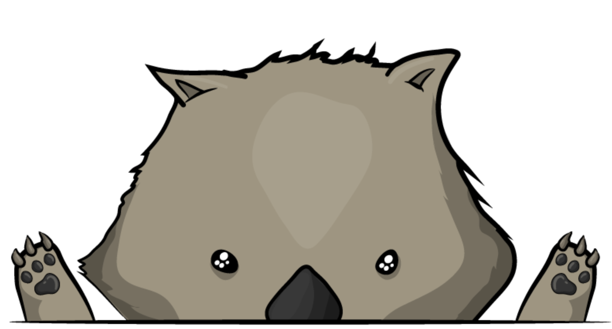
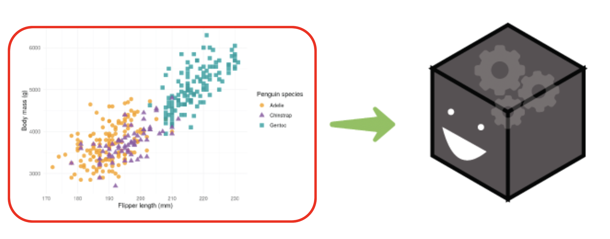
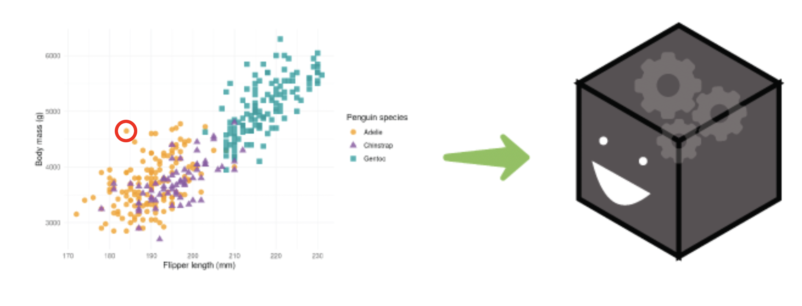
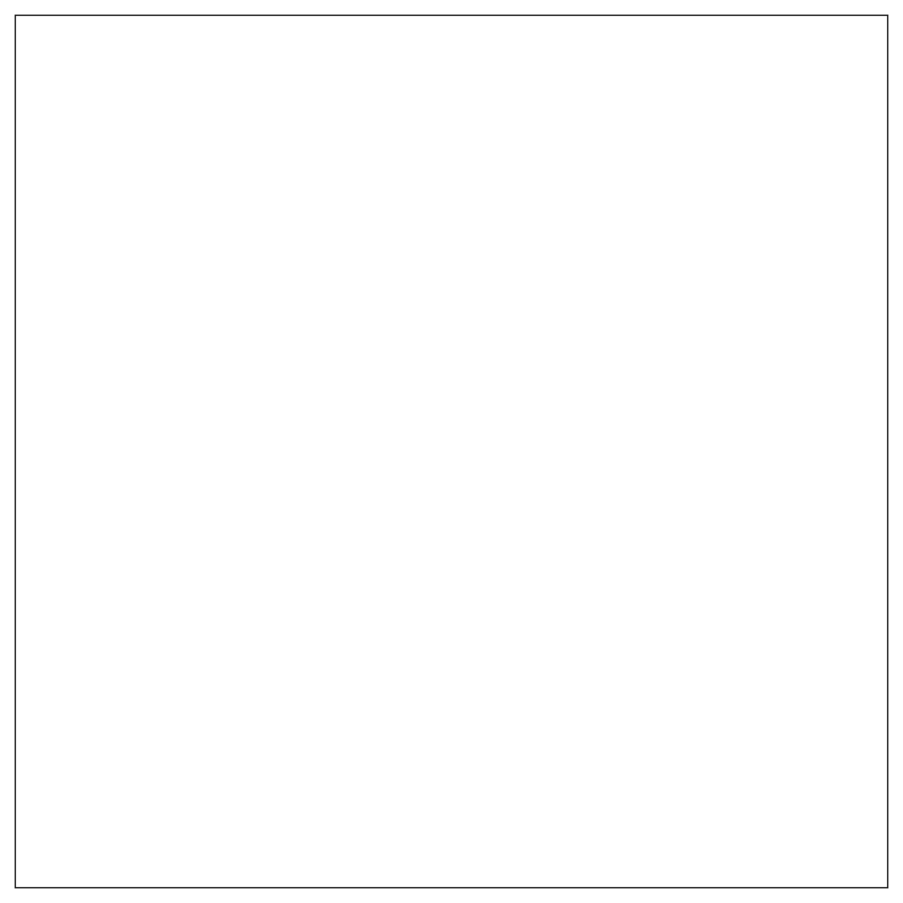
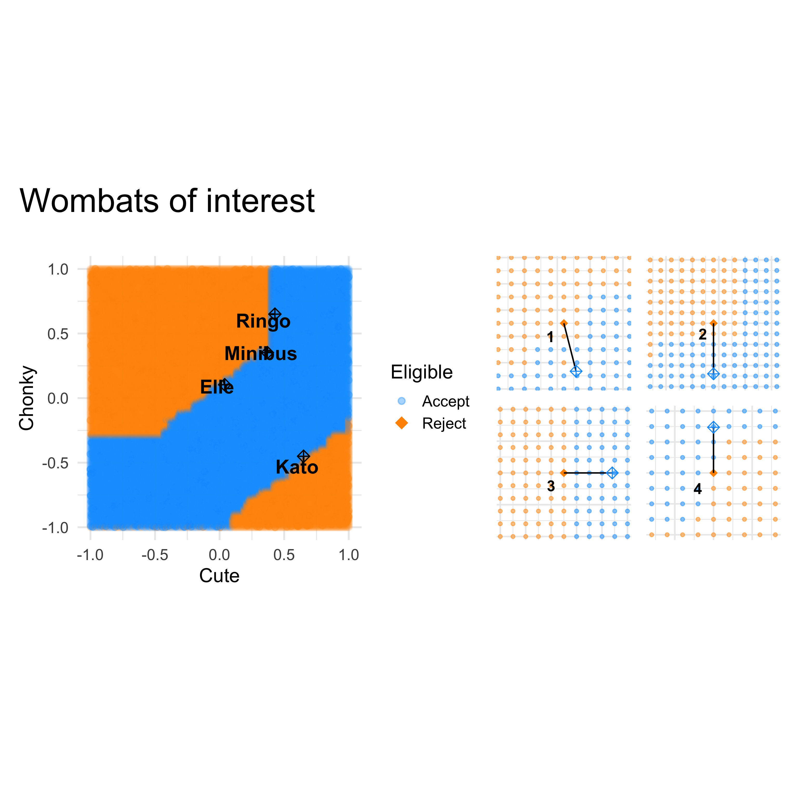
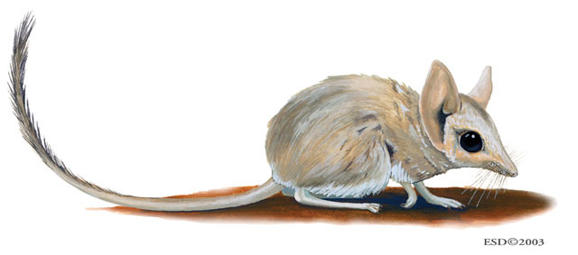

Supervised by Dianne Cook, Patricia Menendez, Thiyanga Talagala and Kate Saunders
Janith Wanniarachchi
Hi I’m Janith
I’m a PhD candidate at Monash University, Australia
My research work is around making it easier to explain how machine learning models work.
Today I’m going to be talking about
Your first day at the job
You were hired as a data science intern in the loan department of OddPoverty Bank where you help wombats get loans for burrowing holes.
As an intern, you were given a dataset to model, which will classify whether a wombat is eligible for a loan.
The problem
The bank has collected a historical data of the wombats who applied for loans. The dataset is a simple one with two variables,
How cute the wombat is (\(x\))
How chonky the wombat is (\(y\)).

Time to get modeling,
You get around to making a model that works well, to double check you,
Create a synthetic dataset that covers the range of features
Apply the model to the entire region
Visualize the predictions from the model (which we call a model-in-data-space visualisation)

We have complaints!
Four wombats came up upset that their loans were rejected, and they asked what was the important thing that we considered to deny their loan for a burrowing hole. (Was it their cuteness or was it their chonky-ness?)

How do we explain this model to the wombats?
Explainable AI methods or XAI methods came in as a solution to this problem.
XAI can help you look at

How the model reacts to different features overall using Global Interpretability Methods

How the model gives a prediction to one single instance using Local Interpretability Methods
Explaining one prediction
There are several key local interpretability methods that are related to each other in how they approach the problem
LIME (Local Interpretable Model agnostic Explanations)
SHAP (SHapley Additive exPlanations)
Anchors
Counterfactuals
Using XAI methods
So let’s apply these methods to our model to help our wombats out!
Wombat
Lime
SHAP
Counterfactuals
Anchors
Elle
chonky
chonky
chonky
chonky
Minibus
cuteness
chonky
chonky
cuteness
Ringo
cuteness
chonky
cuteness
chonky
Kato
chonky
cuteness
chonky
chonky
Wait… so which one do we tell these wombats?
Why did this workflow fail?
Different XAI methods examine different mathematical facets of the model.
With that, disagreements are bound to happen.
Most tools right now, look at the numbers themselves.
We don’t see how these explanations relate to the data itself or the model’s actual internal view of the data.
There’s more to the story than just the final explanations
Bringing it all together
Our local, model-agnostic XAI tools can be simplified into three common blocks:
Perturbation Mechanism
Generates synthetic observations in the neighborhood of the target observation.
Optimization Objective
Finds a simpler model, a feature importance or a region that best solves the problem of each XAI method.
Structure of Output
Returns an interpretable form (coefficients, rules, counterfactuals).
Let’s break it apart
XAI explanations are just the tip of the iceberg
There are more things that came together to make these XAI explanations.
LIME
Perturbation Mechanism Randomly adding noise to the original data to generate a local neighbourhood to see how the model reacts.
Optimization Objective Finds the simplest possible model that mimics how the complex model behaves for the randomly generated dataset from the previous part.
Final Output Coefficients that show exactly how much, and in what direction, each feature pushed that specific prediction.
Figure 1
SHAP
Perturbation Mechanism Tests combinations of features being “turned on” or “turned off”.
Optimization Objective
Uses game theory math to fairly distribute the “credit” for the final prediction among all the features involved.
Final Output Coefficients that show the effect of each feature being included in the model.

Figure 2
Counterfactuals
Perturbation Mechanism Generates synthetic candidates around the observation by adding noise.
Optimization Objective
Simultaneously balances the goals of reaching the required model output while also making the smallest, realistic change possible to the dataset.
Final Output The closest observation that satisfies the conditions (e.g., “If the wombat was less chonky the loan would be accepted.”).

Figure 3
Anchors
Perturbation Mechanism Generate synthetic data in a fixed boundary around the local neighborhood
Optimization Objective Tries to find the set of conditions that creates the biggest possible bounding box within that region containing observations similar to that of the given observation.
Final Output A bounding box within the fixed boundary region that contains points similar classified as the observation.
Figure 4
What we made

Kultarr is an R package that aims to provide an implementation of Anchors using a simpler algorithm.
Kumquats was developed to help people understand the inner workings of LIME and what happens within it by exposing a lot of the inner workings within R.
You can install kumquats from CRAN by running
install.packages("kumquat")
The proposed geometric representations
LIME can be seen as
regression lines
SHAP can be seen as
force vectors
Counterfactuals can be seen as
connecting lines
Anchors can be seen as
boxes
How can we help the wombats?
Explaining to the wombats what were the reasons for their rejection requires us to look at the visuals individually to understand.
Which part of the model is being explained?
Is the xai method that you are using appropriate to answer the question?
We need to use the geometric representations along with putting the model in the data space to look at the explanation in place with the data and the model’s prediction.
For that we have provided two R packages (kumquat and kultarr) that makes it easier to break open XAI methods and inspect its inner pieces.
Thank you!
Have any suggestions or ideas?
The colour palette for these slides are inspired by the photograph by Bill Henson as part of the art installation Oneiroi in the Hellenic Museum, Melbourne.


 The colour palette for these slides are inspired by the photograph by Bill Henson as part of the art installation Oneiroi in the Hellenic Museum, Melbourne.
The colour palette for these slides are inspired by the photograph by Bill Henson as part of the art installation Oneiroi in the Hellenic Museum, Melbourne.